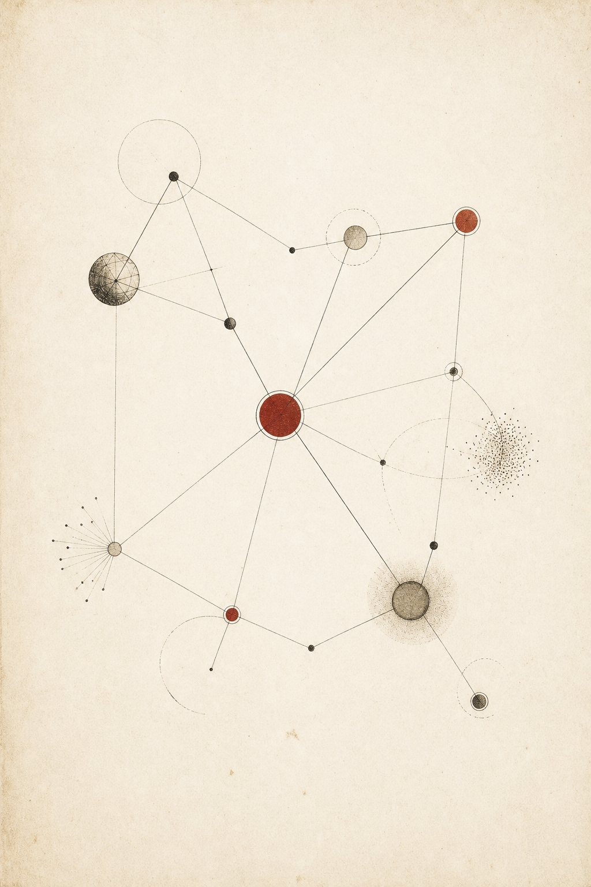

01
被动收集 → 主动遗忘
现有笔记工具像仓库 —— 资料堆积越多，您离它越远。研迹反过来：它主动读您的库，并把要紧的事情送到您面前。
研迹是一份主动写作的研究报 —— 它持续读您所读，追踪您所追，每天清晨在您打开它之前，把"本周您该知道的"已经编辑成一份真正可读的报刊。证据齐备，引用可点。

这不是您的错。是工具的错。

编辑摘要、本周三大头条、Curator 综述、与您过往工作的对话、反方意见、下周雷达 —— 完整 6 个章节，11 分钟阅读时长。每一处12都可点击。
阅读样例简报 No. 127 → 127
127